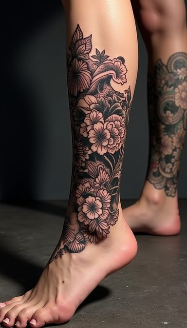
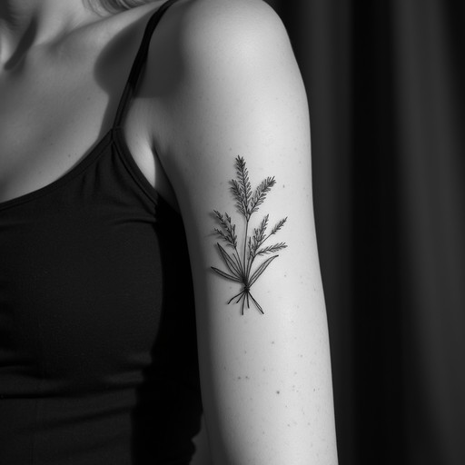
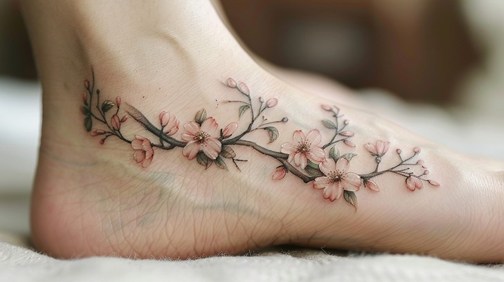
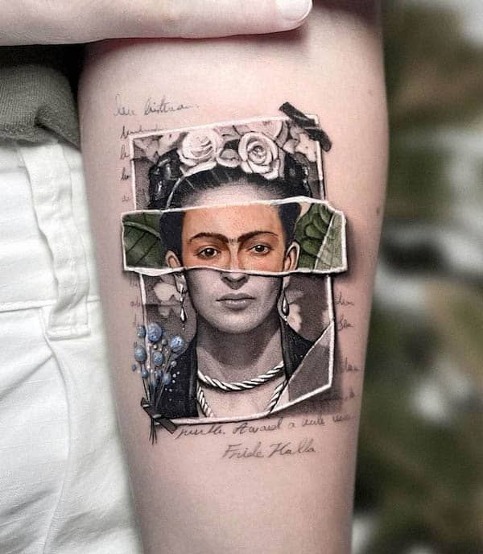
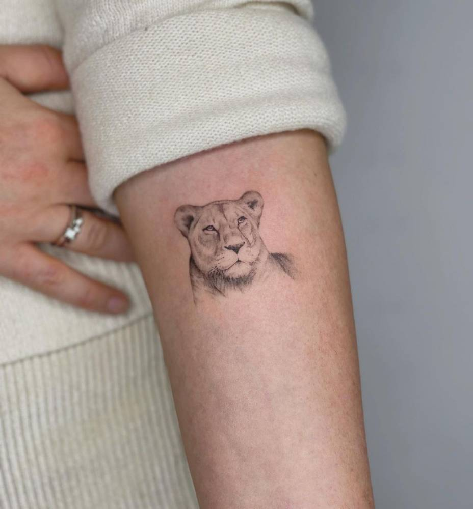
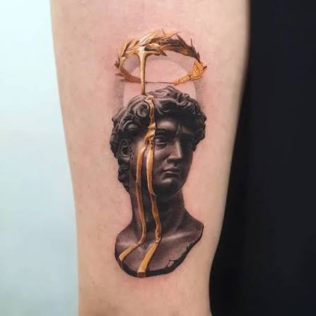

Flowers
Artista: Mariela Garcia
Estilo: Tradicional · Pierna

Artista: Mariela Garcia
Estilo: Tradicional · Pierna

Artista: Jose Martin
Estilo: Minimalista · Brazo

Artista: Sofia Martinez
Estilo: Japones · Tobillo

Artista: Jazmin Carrizo
Estilo: Realista · Brazo

Artista: Jose Martin
Estilo: Minimalista · Brazo

Artista: Jazmin Carrizo
Estilo: Microrealismo · Brazo